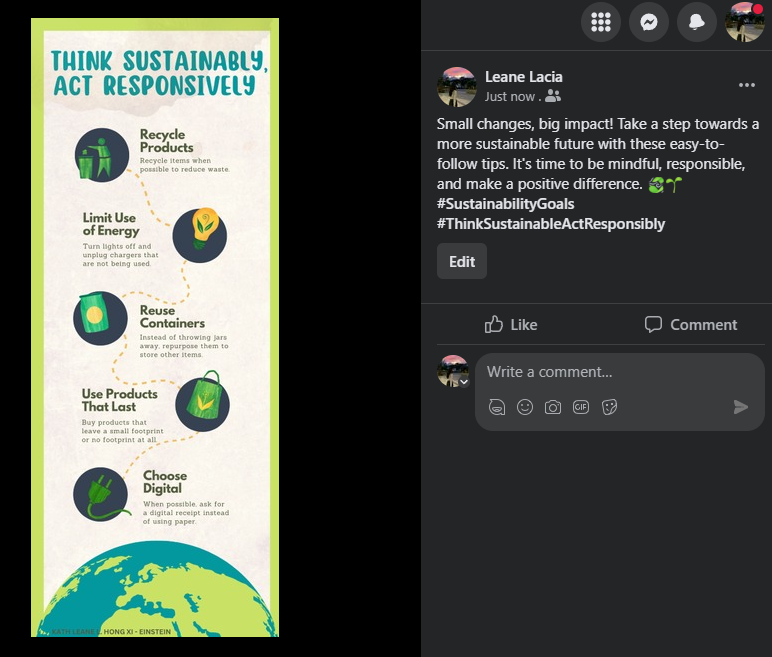

"GREENING OUR FUTURE, TOGETHER"
In a world wherein environmental issues are getting worse, I find myself increasingly driven to make a difference. The urgency to preserve our planet for future generations has motivated a passion within me to raise awareness about recycling, reducing waste, and conserving energy. In addition to that, I firmly believe that by taking action and inspiring change, we can pave the way towards a more sustainable and harmonious way of life. Together, we can be catalysts for change, creating a wave of conscious decision-making that leads us towards a sustainable future where our planet thrives and flourishes.

When our class was tasked with choosing an advocacy and creating infographics, I chose the opportunity to spread awareness to think sustainability. I believed that by focusing on the theme "Think Sustainable, Act Responsibly," I could make a meaningful impact and inspire others to adopt eco-conscious habits.
I chose Facebook as the primary platform to promote and share awareness about sustainability. With its vast user base and diverse audience, Facebook provided the ideal stage to engage with a wide range of individuals and communities.
I encouraged active participation and engagement from the Facebook community. I joined groups where they encouraged users to share their sustainable practices and success stories, and invited them to join the conversation about responsible action. Through these interactions, I aimed to create a space for learning, sharing, and mutual support among individuals committed to making a positive difference.
KATH LEANE L. HONG XI - EINSTEIN